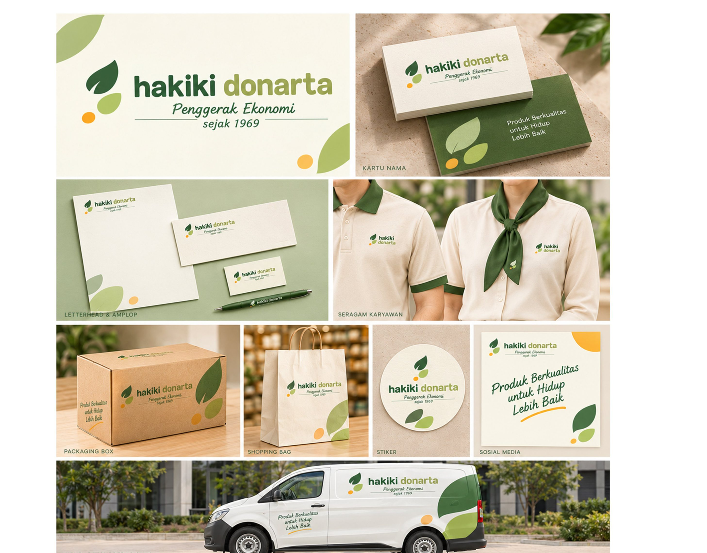
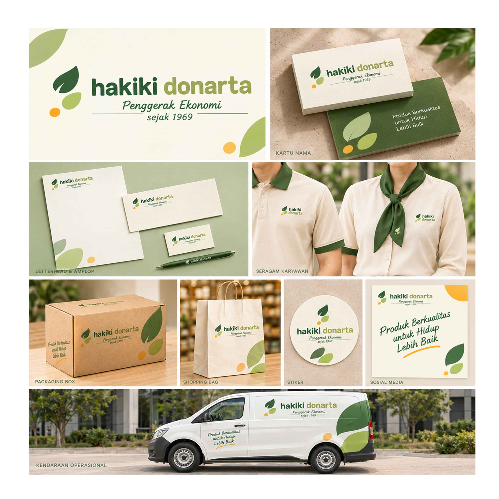
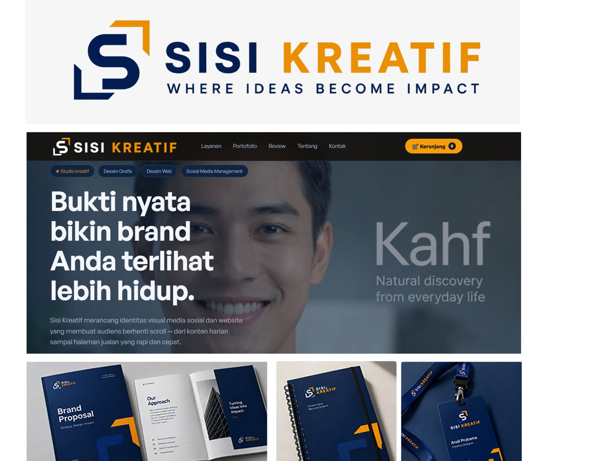
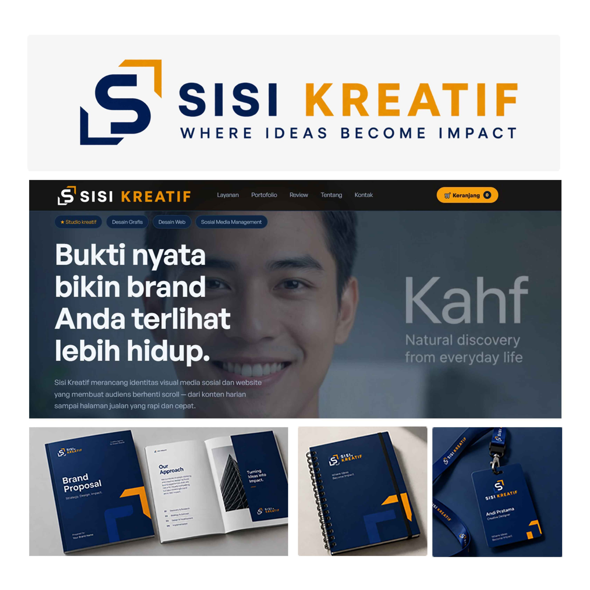
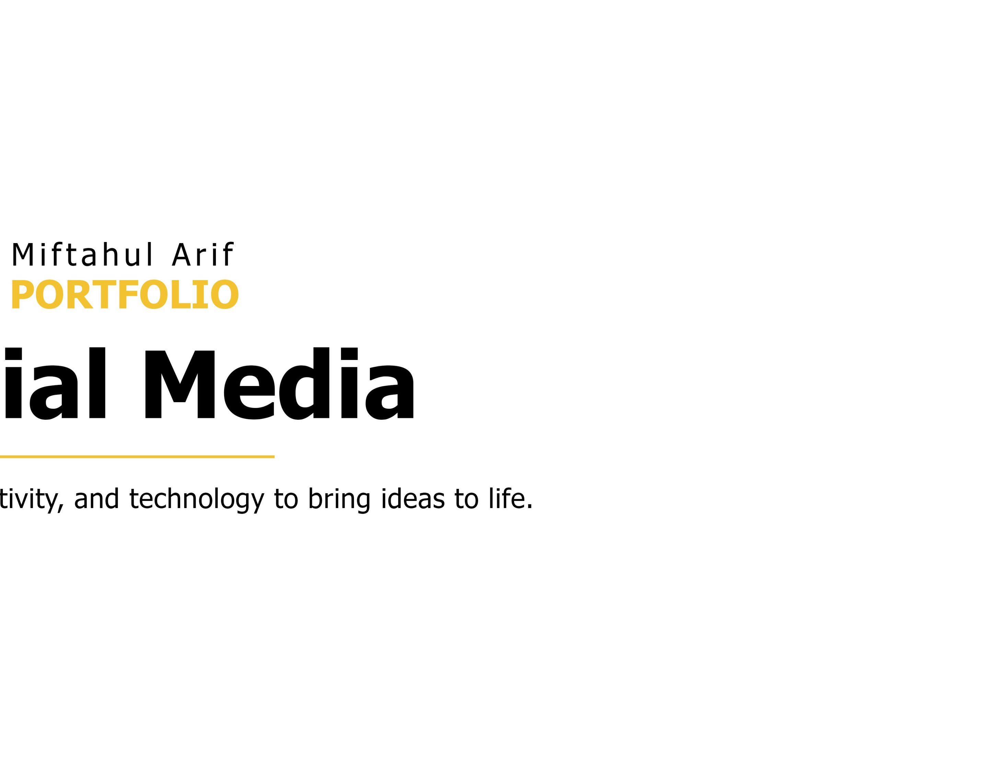
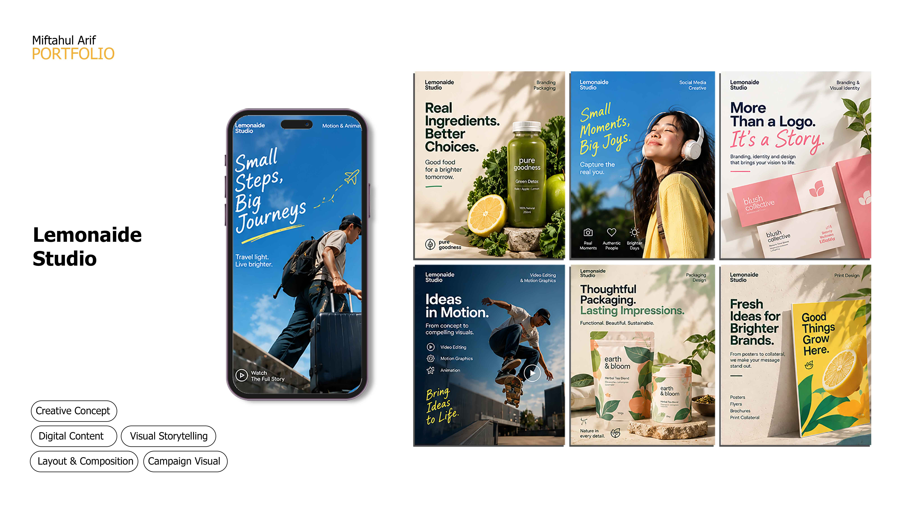
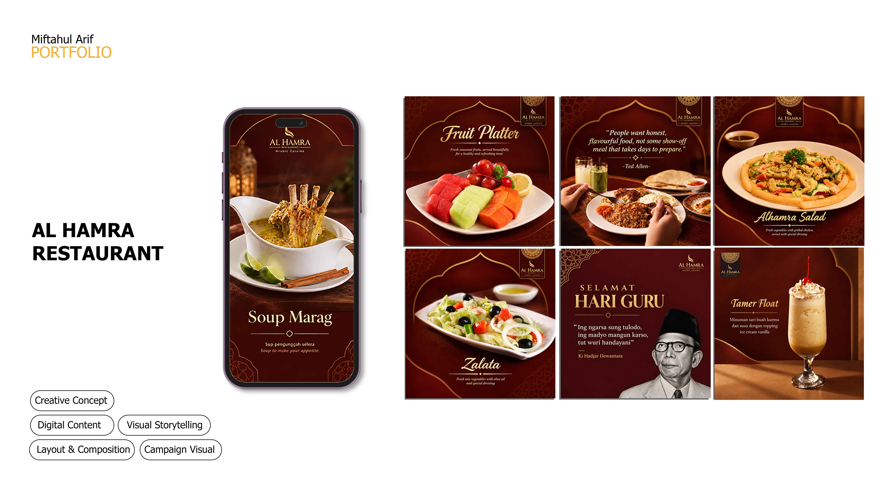
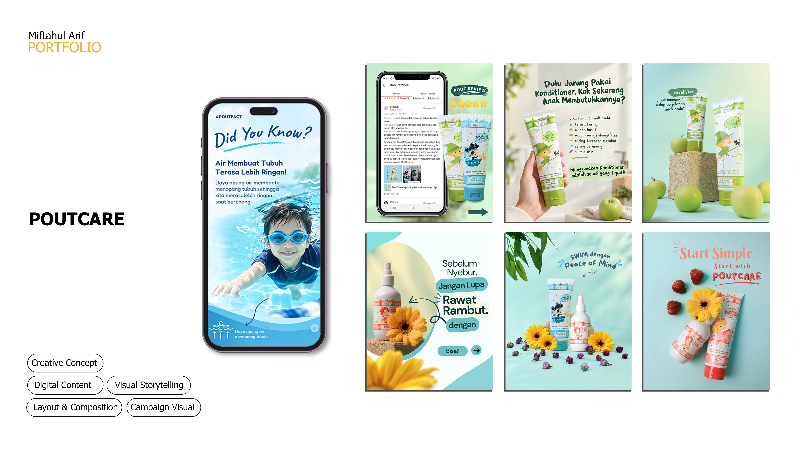
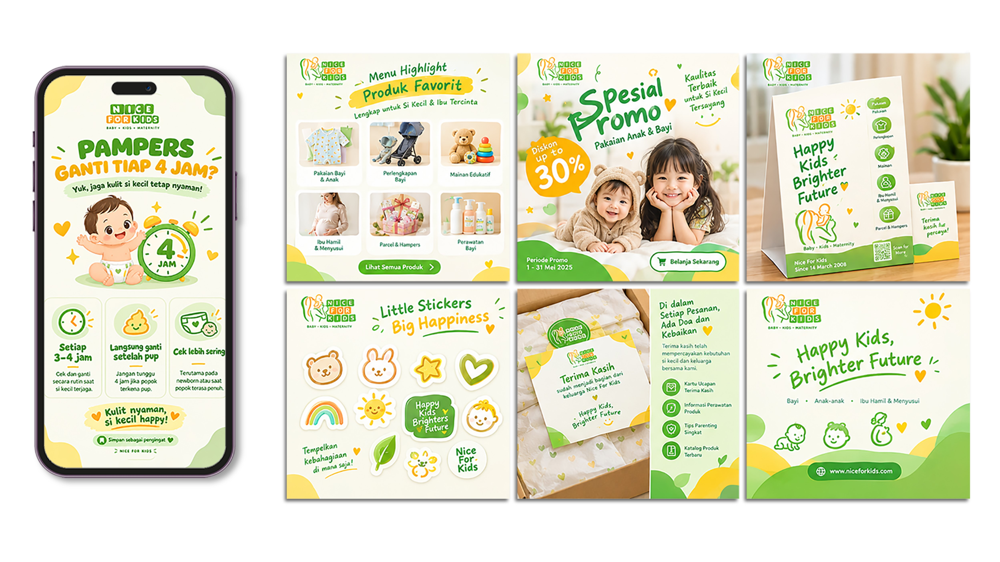
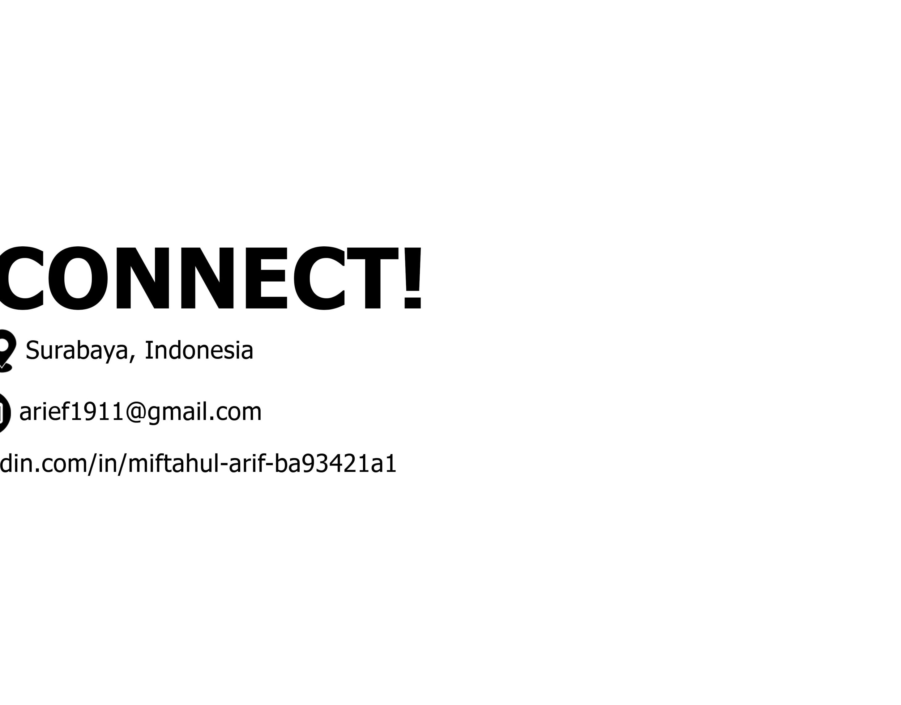

Brand Identity
PJM Group
A modern visual identity and promotional campaign for a housing company, including brochures, banners and campaign materials.
GRAPHIC DESIGNER · BRANDING · VISUAL COMMUNICATION
I’m Miftahul Arif, a graphic designer creating visual communication for brands, digital platforms and print media. My work brings together clear ideas, purposeful design and consistent visual systems.
01 / ABOUT
Graphic designer with experience creating visual communication for digital and print media, including branding, promotions, social media and events. Experienced in working remotely with international clients and managing several design projects under tight deadlines.
With a background in Communication Science and marketing, I translate briefs into clear, consistent and on-brand visuals.
02 / SELECTED WORK
Brand identity, institutional design and digital content created to communicate with purpose.

Brand Identity
A modern visual identity and promotional campaign for a housing company, including brochures, banners and campaign materials.

Brand Identity
A refreshed visual identity for a food and beverage ingredients supplier, applied across stationery, packaging, uniforms, vehicle graphics and social media.

Brand Identity
A visual identity for an Arabic cuisine restaurant, with logo, menus, promotional displays, packaging and restaurant collateral.

Brand Identity
A creative agency identity built around a geometric logo, navy-and-orange palette, brand materials and digital applications.

Institutional Design
Institutional calendar and profile-book cover designs supporting a consistent visual presentation for university public relations.

Social Media & Digital Content
Digital content concepts covering branding, social media creative, motion graphics, packaging and print design.

Social Media & Digital Content
Social media content concepts for restaurant promotions, menu highlights and brand storytelling.

Social Media & Digital Content
Social media content for personal-care products, including educational posts, product highlights and promotional visuals.

Social Media & Digital Content
Digital content for kids and baby products, including promotional posts, product highlights and brand communication.

Social Media & Digital Content
An educational carousel series explaining crypto tax topics through structured layouts and clear visual hierarchy.
03 / EXPERIENCE
• Develop visual content and marketing assets for a direct-to-consumer (DTC) brand across digital marketing channels.
• Create product-focused promotional materials and social media campaigns to support consumer engagement and brand awareness.
• Maintain consistent brand identity across consumer-facing marketing communications.
• Collaborate with marketing teams to translate campaign objectives into effective visual concepts.
• Help SMEs develop professional and consistent visual identities and promotional materials, supporting brand awareness and product or service promotion.
• Supported marketing and project-related coordination and visual communication.
• Supported digital campaigns, social media content, marketing materials, events and external partner coordination.
04 / SKILLS
Adobe Photoshop · Adobe Illustrator · Adobe Lightroom · Canva · Figma
Trello · Notion
Brand Identity · Visual Communication · Social Media Design · Digital & Print Design · Campaign Visuals
05 / LET’S CONNECT